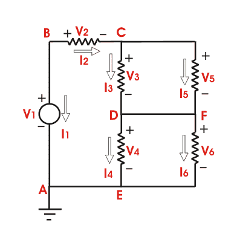

This theorem has been introduced in the year of 1952 by Dutch Electrical Engineer Bernard D.H. Tellegen. This is a very useful theorem in network analysis. According to Tellegen theorem, the summation of instantaneous powers for the n number of branches in an electrical network is zero. Are you confused? Let's explain. Suppose n number of branches in an electrical network have i1, i2, i3, .............in respective instantaneous currents through them. These currents satisfy Kirchhoff's electric current law. Again, suppose these branches have instantaneous voltages across them are v1, v2, v3, ........... vn respectively. If these voltages across these elements satisfy Kirchhoff Voltage law then,
vk is the instantaneous voltage across the kth branch and ik is the instantaneous electric current flowing through this branch. Tellegen theorem is applicable mainly in general class of lumped networks that consist of linear, non-linear, active, passive, time variant and time variant elements. This theorem can easily be explained by the following example.

In the network shown, arbitrary reference directions have been selected for all of the branch currents, and the corresponding branch voltages have been indicated, with positive reference direction at the tail of the electric current arrow. For this network, we will assume a set of branch voltages satisfy the Kirchhoff voltage law and a set of branch electric current satisfy Kirchhoff electric current law at each node. We will then show that these arbitrary assumed voltages and currents satisfy the equation.
And it is the condition of Tellegen theorem.
In the network shown in the figure, let v1, v2 and v3 be 7, 2 and 3 volts respectively. Applying Kirchhoff voltage law around loop ABCDEA. We see that v4 = 2 volt is required. Around loop CDFC, v5 is required to be 3 volt and around loop DFED, v6 is required to be 2. We next apply Kirchhoff electric current law successively to nodes B, C and D.
At node B let ii = 5 A, then it is required that i2 = − 5 A. At node C let i3 = 3 A and then i5 is required to be − 8. At node D assume i4 to be 4 then i6 is required to be − 9. Carrying out the operation of equation,
we get, 7 X 5 + 2 X ( − 5) + 3 X 3 + 2 X 4 + 3 X ( − 8) + 2 X ( − 9) = 0
Hence Tellegen theorem is verified.
 by
by